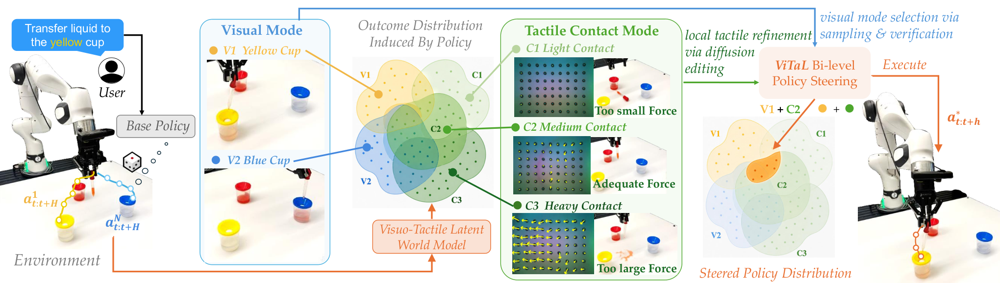

ViTaL
不重训策略：先用视觉在候选里选模式，再用触觉把选中的那段动作改写。
Inference-time Policy Steering via Vision and Touch
三个真机接触任务各 20 次试验，纯视觉基础策略总体成功 30%/30%/40%，同一条策略经引导升至 90%/75%/80%（附录 C.2）。
01这篇要解决什么？
如果你已经在用“采样多条候选、让验证器挑一条”的做法，这篇要补的是验证器看不见的那一半。视觉能判断机器人是不是朝正确的杯子去，却判断不了夹得稳不稳、挤压力有没有过头，而这类接触量决定接触密集任务成不成。
02先看一个场景
桌上摆着红、黄、蓝三只杯子，指令是把红杯里的液体移到蓝杯、再把滴管放回去。一条只看图像训出来的扩散策略，可能朝黄杯走，也可能方向对但半路把液体挤了出来。这两种失败在第三人称和腕部画面里都不明显：画面上滴管一直被夹着，看不出夹得太松还是太狠。
03方法怎样运转？

- 01
基础策略与两个冻结编码器
基础策略是作者自训的扩散策略，Diffusion UNet 加 ResNet-18 编码器，每任务 50 条演示，出 16 步动作块、执行 8 步，主实验用纯视觉版。观测编码器不训：视觉冻结 DINOv3，触觉冻结 AnyTouch2，触觉图来自指尖 GelSight Mini。
- 02
潜空间视触世界模型：作者训练的那一块
在两个冻结编码器之上，作者训了一个 Transformer 潜空间动力学模型，按动作块递推预测视觉与触觉潜变量，另训两个解码器把潜变量还原成图像。数据是 50 条演示加约 250 条不同检查点的策略回放。长视野靠递归：世界模型出一段潜变量，解码后再喂回策略要下一块动作。
- 03
视觉这一层：采 10 条候选，用现成奖励模型排序
每次策略查询采 10 条 16 步候选，各自在世界模型里滚出来，把末帧潜变量解码成 224×224 图像，送进现成的 ROBOMETER-4B 做零样本打分，取分最高的那条当视觉锚。作者只为在线评测加了 KV 缓存与滑窗上下文，不微调，也不对这个视觉语言模型求梯度。
- 04
触觉这一层：把锚动作部分加噪再引导去噪
取视觉锚的前 8 步，按 SDEdit 的做法加噪到第 4 级，再用基础策略反向去噪。每一级先还原干净动作估计，送世界模型的触觉分支预测触觉潜变量，用它与阶段性触觉文本的余弦相似度当奖励，对动作求梯度、单位化后以系数 10 改写噪声预测。
- 05
阶段切换与循环怎么停
任务目标由一个视觉语言模型离线拆成逐阶段的视觉与触觉文本，这个模型的型号论文没有给出。移液任务分两段：最高视觉奖励越过 0.70 就切到第二段目标，触觉文本同时从轻夹换成重夹并保持 40 步。执行完 8 步就重新观测、重新采样，循环里没有成功检测，也没有回退。
z_v, z_t = DINOv3(o_rgb), AnyTouch2(o_tac) # 两个编码器全程冻结
cands = [pi_theta(o) for _ in range(10)] # 基础策略权重不动，采 10 条 16 步候选
for a in cands:
z_pred = world_model(z_v, z_t, a) # 作者自训的潜空间动力学，递归两块
score[a] = ROBOMETER_4B(decode(z_pred[-1]), l_vis[phase]) # 现成模型，零样本
anchor = argmax(score)[:8] # 视觉锚只定“去哪”
x = renoise(anchor, K=4) # SDEdit 式部分加噪
for k in range(4, 0, -1):
a0 = clean_estimate(x, k)
r = cos(world_model.tactile(z_v, z_t, a0), CLIP_text(l_tac[phase]))
x = ddim_step(x, eps_theta(x, k) - 10 * sqrt(1 - alpha[k]) * unit(grad(r, a0)))
execute(x) # 执行 8 步，再用新观测重来一轮
if max(score) > 0.70: phase += 1 # 单向切换：无成功检测，无回退方法与结果的原文定位见本页引用。
04跟着这个场景走一遍
教学推演：回到上面的场景。第一步，动作来自作者自训的那条扩散策略，它只看两路 RGB，权重全程不动；观测先经冻结的 DINOv3 与 AnyTouch2 编成潜变量。第二步，一次查询采 10 条 16 步候选，每条都在潜空间世界模型里递推展开，把末帧解码成图像。第三步，ROBOMETER-4B 按当前阶段的文本目标给这十张图打分，“把液体移到蓝杯”这句话让朝黄杯去的候选拿到低分，方向问题在动作出手之前就被排掉，选中的那条成为视觉锚。第四步，锚的前 8 步被加噪到第 4 级再去噪：每一级先还原出干净动作估计，送进世界模型的触觉分支预测触觉潜变量，与“轻轻夹住”算余弦相似度，梯度单位化后按系数 10 改写噪声预测，于是夹得过狠、会把液体挤出来的那类动作被压下去。第五步，视觉奖励越过 0.70 后阶段切换，触觉目标换成用力夹住并保持 40 步，视觉目标换成把滴管放回红杯；执行完这 8 步就重新观测、重新采样。要点明这套机制没做到什么：它没有成功检测，液体真的洒了没有任何模块会说出来；修正全部发生在执行之前，做砸的那一块只能等下一轮靠新观测间接纠正；阶段切换是单向的，论文没有给出判断有误时退回上一阶段的办法。
05实验到底表现怎样？
三个真机接触密集任务：白板擦写、间隙约 1 毫米的插孔、移液转运。平台是 Franka Emika 加 GelSight Mini 与两路 RGB。每任务 20 次试验、两条指令各 10 次；成功拆成视觉成功与接触成功，两者都满足才算整体成功。奖励排序精度另按 40 对回放统计。
作者报告的实验结果 · v1
| 任务 · 附录 C.2（图 8） | 纯视觉基础策略 | 加 ViTaL 引导 |
|---|---|---|
| 擦写白板 | 30% | 90% |
| 移液转运 | 30% | 75% |
| 插孔装配 | 40% | 80% |
| 视触基础策略 · 上述三任务 | 30% / 70% / 60% | 70% / 80% / 70% |
原始证据：双层引导与验证器：§4 ↗ · 触觉奖励定义：§4.3 ↗ · 主结果：图 2 ↗ · 不同基础策略：附录 C.2 ↗
这组数字取自附录 C.2 的图 8，与正文那句提升 51% 不是同一个口径，不要混着引。每任务只有 20 次，一次试验就是 5 个百分点，插孔从 40% 到 80% 只对应 8 次差别。另外基础策略更强不等于引导后更强：视触策略在擦写与插孔上反而不如纯视觉策略被引导的结果。
06收益来自哪里，又停在哪里？
消融与机制证据
表 1 用偏好序精度衡量验证器：视觉在真值观测上 83.3%、在预测未来上 85.0%，触觉 78.3% 与 81.7%；插孔的视觉只有 70%，作者归因于 ROBOMETER 分不清左右。附录 C.1 显示联合建模在 FID 与光流误差上好过单模态。表 13 的单步耗时 471 毫秒，基础策略 3 毫秒。
结论的适用边界
模型来源要分两层算。冻结的现成件：视觉编码器 DINOv3、触觉编码器 AnyTouch2、文本侧的 CLIP 文本编码器、视觉验证器 ROBOMETER-4B 零样本使用；把高层指令拆成阶段目标的那个视觉语言模型，论文没有给出型号。作者训练的：每个任务一条扩散策略、一个潜空间动力学模型与两个解码器，都依赖该任务的 50 条演示与约 250 条回放。因此不重训策略只对基础策略权重成立，换一个任务整套世界模型要重训，这才是真正的前提成本。规模上只有三个真机任务、每任务 20 次，摘要里的 51%、33%、20% 都是相对提升，绝对成功率要回附录 C.2 查。作者自述的限制也要带上：整套方法依赖世界模型的保真度，长程递推误差会累积到验证；触觉编码器的预训练数据远小于现代视觉语言模型。还有一处细节对不上：正文说世界模型用 250 条回放，擦写任务的附录写的是 280 条。
07放回全书的脉络
与 Harness VLA 同构：都不动策略权重，只改它被调用的方式。区别在于 Harness 用解析原语把机器人重新摆位，这篇直接在动作分布内部改写。
08把阅读变成一个小研究
固定基础策略与总采样预算，比较只按视觉排序、只按触觉引导、两个奖励相加、以及先选后改四种做法。
先自己回答：这项实验怎样才有解释力？
关键是把预算对齐：若先选后改在同等采样数下仍更好，才支持分层的说法。同时分开记视觉成功与接触成功，否则看不出是哪一层在起作用。
- 用自己的话说出这篇改变了哪个模块。
- 画出它的输入、输出和一次失败如何被处理。
- 复述一个结果，同时说清基线、指标与实验条件。这一问不给答案，材料在第 05 节。
先自己答，再看前两问的参考答案
这篇改了哪个模块改的是推理时的采样与去噪这一层。基础策略权重一次都不动，不收新演示，不扩动作空间，两个观测编码器全程冻结，动作仍然来自那条扩散策略的分布。新增的是三样东西：一个建在冻结编码器之上的潜空间视触动力学模型，把候选动作展开成可评的未来；一对语言条件验证器，视觉那侧直接用现成模型，触觉那侧是作者提出的、在对齐潜空间里算文本与触觉嵌入余弦相似度的奖励；以及把两者串起来的双层优化——视觉在长视野上选模式，触觉在短视野上改写，而不是把两个奖励加在一起。
输入、输出与一次失败如何被处理输入是当前两路 RGB、一张 GelSight 触觉图、本体状态，以及一条被视觉语言模型离线拆成阶段性视觉目标与触觉目标的任务文本。输出是一段 8 步动作块，直接交给机器人执行；产生它的过程分两步——先从基础策略采 10 条 16 步候选，在世界模型里滚出视觉潜变量、解码成图像交给 ROBOMETER 排序，选出视觉锚；再把锚的前 8 步加噪到第 4 级，用触觉奖励对干净动作估计的梯度改写噪声预测，逐级去噪出最终动作。失败没有独立的处理通路：系统不做成功检测，也没有重试、回退或重新摆位这类动作，所谓的修正完全发生在执行之前——每执行 8 步就用新的真实观测重新采样、重新排序一次，上一块动作做砸了只能靠新观测在下一轮被间接反映。阶段切换同样是单向的，视觉奖励越过 0.70 就换目标，论文没有给出越过之后发现判断有误时退回的机制。
不重训策略：先用视觉在候选里选模式，再用触觉把选中的那段动作改写。
↗带着位置回到原文
首发日期用于时间排序；以下方法与结果对应 v1。数据为论文作者报告，本讲义没有独立复现实验。
QA就这一页提问或讨论
对某个数字、某条边界或某个推演有疑问，欢迎直接留言：讨论按页面分开，回复会保留在 XinrunXu/awesome-agentic-robotics-papers 的 Discussions 里，需要一个 GitHub 账号。